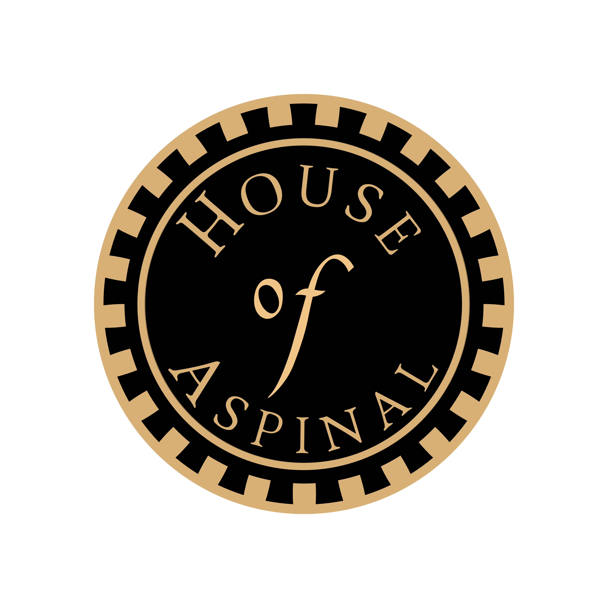
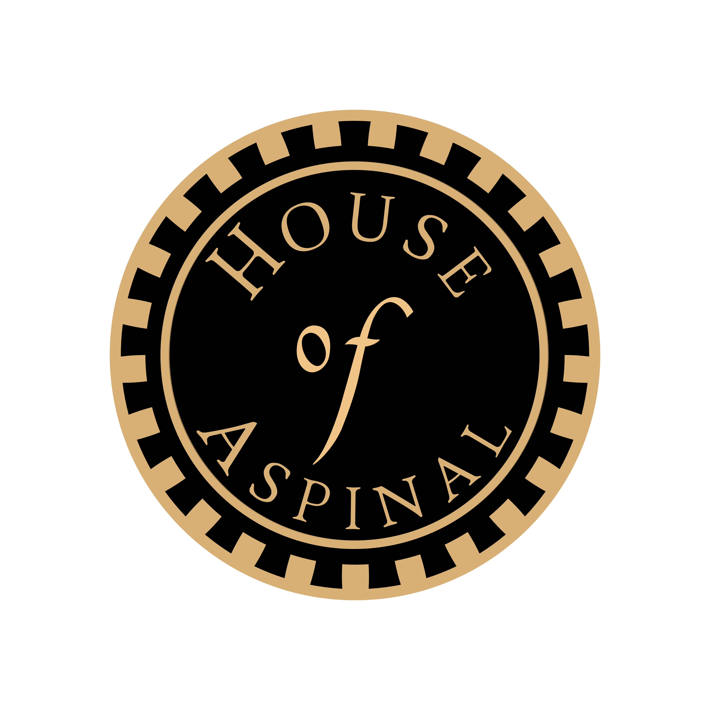
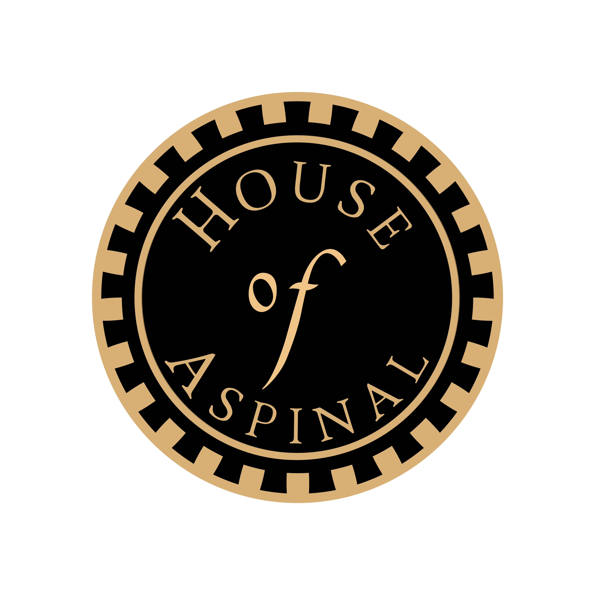

In acordance with discussions between the client and Myself, I developed alternative brand symbols for the use on products and new busniess ventures. The client wanted to explore the way the lion door knocker, fetured on some of their products could be intergrated into the Sheild found on the original logo. The plan and purpose of the creation of these designs was in the creation of a sister company, called 'House of Aspinal' As such I desinged 2 sets of logos, An unbrella mark, feturingn the iconic fether and two variation 'button' deisngs. For the creation of the new wordmarks I desinged a font based on the unique 'Aspinal' and 'London' typography that could be used future project needs.
